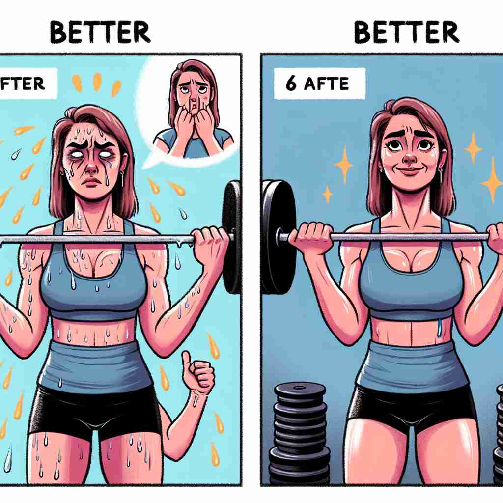

💬 This phone has a better charging speed than the old one.

💬 The woman plays the piano with better performance every day.
💬 The people prefer to go out in better weather.

💬 She achieved better fitness after months of hard work.
🔈 ['betə]
🗝️ adj. & adv. more desirable, satisfactory, or effective
🖼️ 在一个竞争激烈的市场中，有两家手机公司。一家公司推出了新款手机，具有更长的电池寿命和更高的屏幕分辨率。在消费者看来，这款手机显然是一个 better 的选择，既更令人满意，也更具效果。
🔍 理解'better'的关键在于把握其核心含义：'更好'或'更优越'。无论是用作形容词、副词还是动词，都围绕着这个核心概念。想象一个上升的箭头，代表各种情况的改善或优化，这可以帮助你联想'better'的各种用法。
💬 This phone has a better charging speed than the old one.
💬 The woman plays the piano with better performance every day.
💬 The people prefer to go out in better weather.
💬 She achieved better fitness after months of hard work.
🌳 由词根 'bet-'（来源于古英语，表示'好'）加上比较级后缀 '-ter' 组成，表示 '更好，较好'。
💡 记忆 'better' 的时候，可以联想 'bet' 中有 '好' 的含义，加上 '-ter' 表示比较级，一段时间后 'better' 就是比 'good' 更好。
🗝️ adv. to a greater degree or more completely
🖼️ 在一个音乐教室里，两个学生正在练习钢琴。其中一个学生说："我比昨天练习得更久，现在我可以 better 弹这首曲子了。"这句话表明他的练习更全面和深入。
💬 I understand the concept better now.
❓ 从核心含义延伸到程度比较
🗝️ adj. more skillful or adept
🖼️ 在一场篮球比赛中，一个年轻球员展示了他出色的控球技巧。他的教练赞扬道："他比去年更有长进，技术更好，比赛中表现得更为流畅。"
💬 He's better at math than I am.
❓ 从总体优越延伸到特定技能
🗝️ adj. improved in health
🖼️ 在一个医院的病房里，一位医生对正在康复的病人说："经过这几天的治疗，你看起来 much better 了。你的健康明显有所改善。"
💬 The patient is feeling better today.
❓ 从总体改善延伸到健康状况
🗝️ adj. more appropriate or suitable
🖼️ 在一个正式的宴会上，主办方穿着精致的西装，而一位宾客则穿着休闲装。看到这一情况，主持人轻声建议："在这样的场合，穿西装可能更为适合。"
💬 It's better to arrive early than late.
❓ 从优越延伸到适当性
🗝️ v. to improve
🖼️ 在一个社区花园项目中，志愿者们正忙着修整花坛。经过一番努力，花园的整体景观变得更加美丽。负责人自豪地说："经过我们的努力，这个花园终于 better 了。"
💬 We need to better our performance next time.
❓ 从形容词转化为动词，表示使之更好